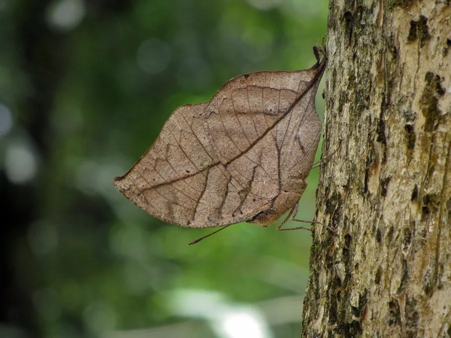

昆虫 · 动物界
枯叶蛱蝶 Kallima inachus

翅合拢时酷似一片枯叶的名蝶，翅背具鲜艳橙蓝斑纹，中国南方至东南亚分布，是拟态研究的经典例子。
- 分类
- 门节肢动物门纲昆虫纲目鳞翅目科蛱蝶科属枯叶蛱蝶属
- 栖息环境
- 常绿阔叶林、林缘与沟谷，喜欢在树干和落叶层停歇
- 地理分布
- 中国南方、印度、东南亚等亚洲热带亚热带地区
- 保护级别
- 暂无评估
物种志
枯叶蛱蝶翅展约 6–8 cm，翅正面呈深褐、橙黄和紫蓝色，色彩艳丽；停歇时双翅合拢，翅腹面呈枯黄褐色，翅脉如叶脉，后翅尾突似叶柄，连边缘的咬痕状缺刻和霉斑状斑点都模仿得惟妙惟肖，几乎与干枯落叶无法区分。
成虫飞行敏捷，喜欢停在树干、落叶层和岩石上，也常到腐果和树液处取食。雌蝶把卵产在爵床科植物如马蓝、水蓑衣的叶片上，幼虫取食叶片，身体带刺毛。枯叶蛱蝶一年发生多代，以成虫越冬，分布在中国南方、印度、东南亚等地，多生活在常绿阔叶林和林缘。它以极致的拟态闻名，被鸟类等天敌接近时，枯叶般的外形常让它逃过一劫，是自然选择和拟态研究的经典例子。
形态与习性
- 食性幼虫取食马蓝、水蓑衣等爵床科植物叶片；成虫吸食腐果
- 翅展约 6–8 cm
- 拟态翅腹面酷似枯叶，翅脉似叶脉，尾突似叶柄
- 生活史一年发生多代，以成虫越冬
- 栖息常绿阔叶林和林缘，常在树干上停歇
- 分布中国南方至东南亚、印度
趣味知识
- 枯叶蛱蝶停歇时几乎与枯叶一模一样，连霉斑和咬痕都能模仿。
- 它翅腹面的叶脉纹路，其实是由翅脉和鳞片颜色共同形成的。
- 枯叶蛱蝶是很多自然博物馆和拟态研究中的经典标本。